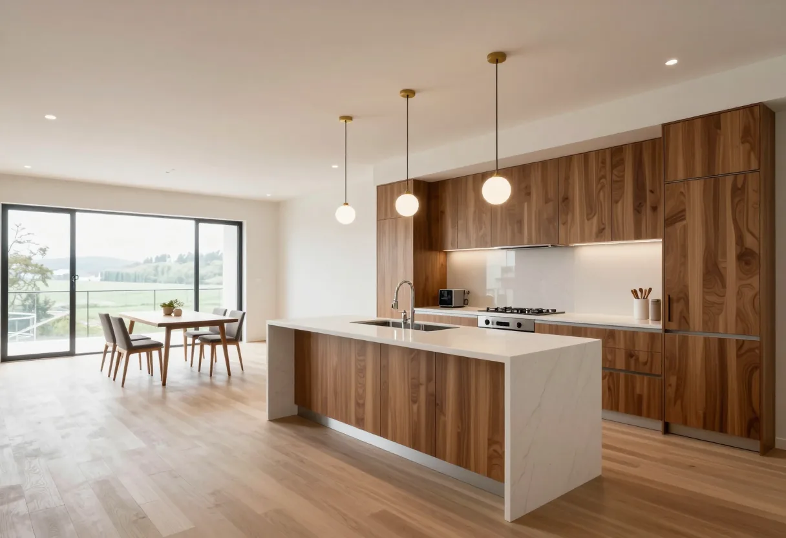

建てた家と、
そのご家族の話
きれいな写真だけでなく、その家で、ご家族が何を大切にされていたのか。どんな話し合いをしたのか。お話しできる家から、少しずつ載せていきます。

30代のご夫婦とお子さんの家
大切にされていたこと
ご主人は、家族みんなで過ごせるリビングを。奥さんは、お子さんの物が増えることも考えた収納と、家事のしやすい間取りを。
話し合いのこと
最初は、ご夫婦の希望が少し食い違うところもありました。どちらかに寄せるのではなく、それぞれに「どうしてそうしたいのか」を伺うところから始めました。
図面を見ながら、収納の位置を変えたらどうか、と案を出し合い、持ち帰って考えていただいたこともあります。打ち合わせは何度か重ねました。
お引き渡しのとき
ご夫婦で「ここをこうしてよかったね」と話しながら、家の中を見ておられました。お子さんが、嬉しそうに家の中を走り回っていたのが、印象に残っています。